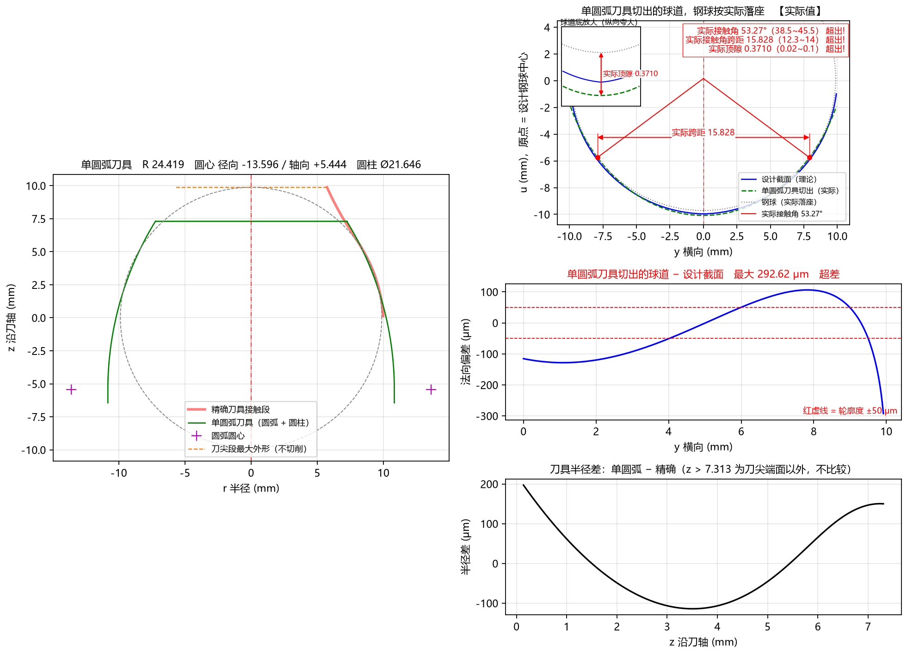
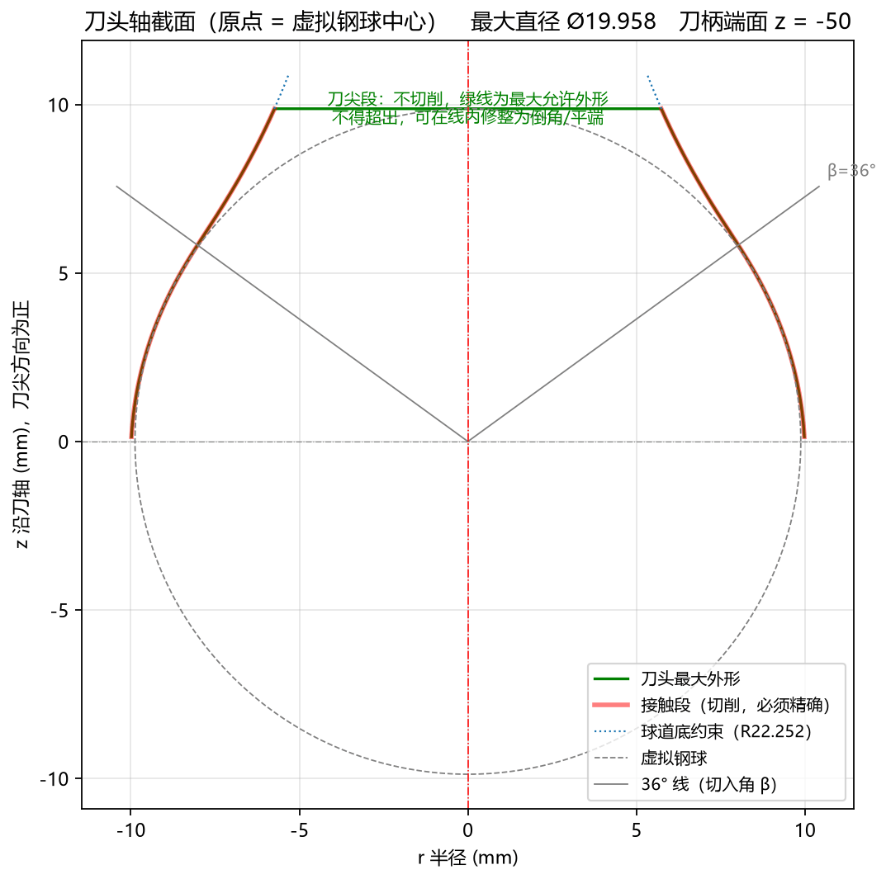
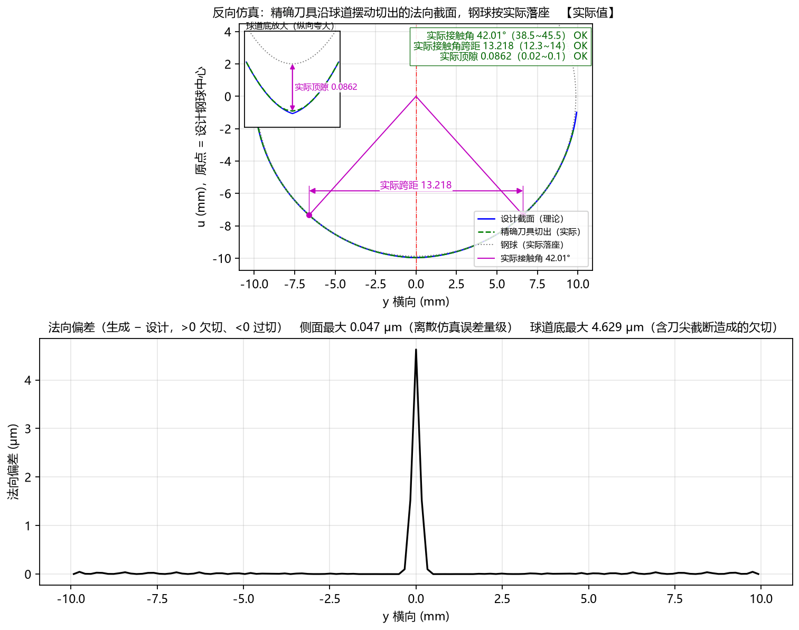
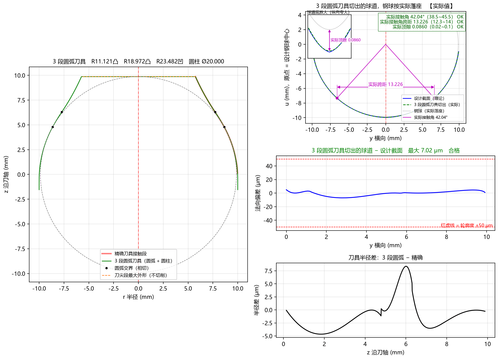
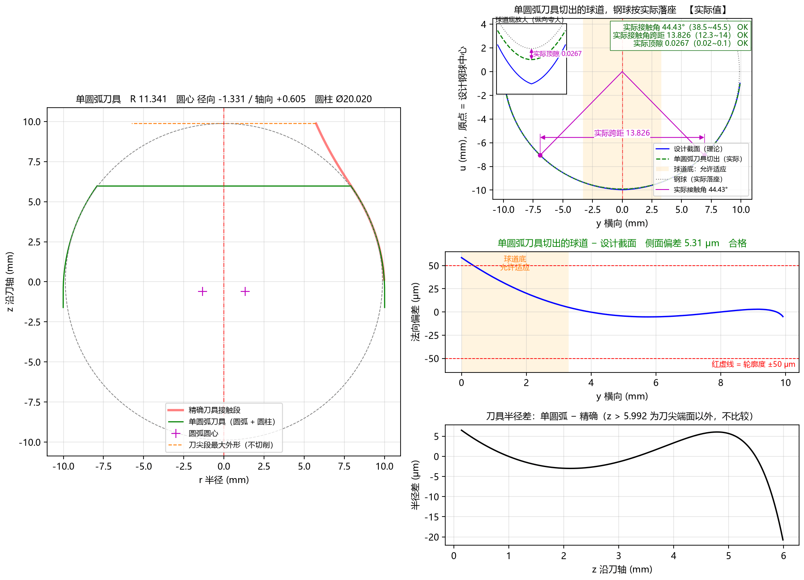

8.3 案例三：双圆弧球道（给定半径 R）与三种刀具制造方案对比 (AC10000)
一、任务背景与零件图纸参数
在许多高刚度、大扭矩球笼式等速万向节星形套中（以软件内置示例 AC10000_参数 为例），球道法向截面采用双圆弧（哥特式尖底，Gothic Arch）截面。
与传统给出“相似度”的图纸不同，该零件图纸直接在截面图上标出了两段圆弧的半径 、名义接触角 ，并同时规定了严格的装配审核范围（接触角、接触角跨距、顶隙与轮廓度公差）：
| 图纸标注项目 | 图纸数值 | 填入 TrackForm 的参数位置与数值 |
|---|---|---|
| 钢球直径 () | （半径 ） | 基本参数 钢球直径 Dw = 19.75 mm |
| 节圆直径 (PCD) | 基本参数 节圆直径 PCD = 63.82 mm |
|
| 球道中心偏移 () | 基本参数 球道偏移 e = 4.44 mm |
|
| 球道截面类型与定义方式 | 双圆弧截面，直接给定圆弧半径 | 截面类型 = 双圆弧，定义方式 = 给定半径 R |
| 名义接触角 () | 基本参数 接触角 α = 42.0 ° |
|
| 双圆弧半径 () | 基本参数 圆弧半径 R = 10.24 mm |
|
| 刀具安装切入角 () | 基本参数 切入角 β = 36.0 ° |
|
| 工件外形尺寸 | 外球面 ，宽 ，，内孔 | 基本参数 ④ 工件外形 与高级参数 内孔直径 对应填入 |
| 图纸审核公差范围 | 顶隙 0.02 ~ 0.10 mm接触角 42° ± 3.5°（即 38.5° ~ 45.5°）接触角跨距 12.3 ~ 14.0 mm截面轮廓度 0.10 mm（即 ±50 μm） |
高级参数 校验范围：顶隙下限/上限 = 0.02 / 0.1接触角下限/上限 = 38.5 / 45.5接触角跨距下限/上限 = 12.3 / 14.0轮廓度公差 = 0.1 |
二、第一步：一键载入 AC10000_参数 并核对双圆弧理论截面
- 点击顶部菜单
文件(F) → 载入示例参数 → AC10000_参数（或手动按上表填入参数并按F5计算）。 - 查看左侧
计算结果面板第 一 分块与右侧Tab 2：球道截面：■ 一、球道截面设计【理论值】 截面：双圆弧（给定半径 R） 钢球中心轨迹半径 Rp = 32.2174 圆弧半径 R = 10.2400 圆心 (y,u) = (±0.2442, 0.2711)（交叉） 尖点处法线角 θ0 = 1.366° 接触角 α = 42.000°（图纸 38.5 ~ 45.5） OK 相似度 = 1.0370 顶隙 = 0.0908（图纸 0.02 ~ 0.1） OK 接触角跨距 = 13.2153（图纸 12.3 ~ 14） OK 球道边缘接触角 = 67.38°- 软件根据输入的
接触角 α = 42.0°和圆弧半径 R = 10.24 mm，自动算出对应的相似度为1.0370、尖底处的理论顶隙为0.0908 mm、理论接触角跨距为13.2153 mm，三项指标全部落在图纸公差带内（绿色OK）！
- 软件根据输入的
三、痛点剖析：为什么双圆弧球道直接用“单圆弧拟合”会严重超差？
在双圆弧（尖底）截面中，左右两段圆弧在球道底部交汇成尖点（尖点处法线角 ），这导致精确成型刀的接触段廓形存在一个明显的“由外凸转内凹”的拐点（刀柄侧外凸切球道侧面，刀尖侧内凹切出尖底）。
如果您在【高级参数 → 圆弧近似】中将 圆弧段数 设为 1、且 单圆弧求法 选默认的 拟合精确廓形，切换到 Tab 6：圆弧近似 会看到如下红字超差报警：

- 失败原因：一段单圆弧只能朝一个方向弯曲，强行去拟合带凹凸拐点的整条接触段，得到的单圆弧半径高达
R 24.419 mm，切出的球道与设计截面最大偏差高达292.62 μm（超差！），且钢球放进去后的实际接触角变成了53.27°（超出38.5°~45.5°！）、实际跨距15.828 mm（超出！）、实际顶隙0.3710 mm（超出！）。
那么，车间加工双圆弧球道究竟有哪些合格方案？TrackForm 为您提供了以下 三种完美解决方案，可根据车间的磨刀与检测设备自由选用：
四、双圆弧球道的三种合格刀具方案详解
方案 A：精确自由曲线成型刀（刀具 DXF + 刀具点表 CSV）
如果您使用五轴数控工具磨床（支持导入 DXF 样条线或高密度点表插补磨削），可直接使用软件算出的精确成型刀廓形：


- 查看计算结果第 二、三 分块与上图
Tab 5：反向仿真偏差：- 精确刀具在侧面接触区的欠切仅为
6.8e-5 mm（0.068 μm离散误差量级）； - 注意一个非常实用的工程细节：本例中
刀尖高度保持在钢球半径9.875 mm（低于尖底接触段最高点10.2269 mm），刀尖平端把最尖端切尖底的0.35 mm刀刃截平了一点，使球道底尖点略微变浅了0.048 mm，但软件通过钢球实际落座仿真证实：落座后的实际顶隙 = 0.0384 mm依然稳稳高于图纸下限0.02 mm（绿色OK），且实际接触角 = 42.02° OK、实际接触角跨距 = 13.221 mm OK！这既避免了刀尖过长过尖易崩刃，又 100% 满足全部图纸指标。
- 精确刀具在侧面接触区的欠切仅为
- 导出文件：直接点击
刀具 DXF（提取PROFILE_SPLINE青色样条层）或刀具点表 CSV。
方案 B：多段相切圆弧刀具（推荐！圆弧段数 = 3）
如果工具磨床或砂轮修整程序只支持标准圆弧指令（G02/G03），只需展开 ▸ 高级参数 → 圆弧近似，将 圆弧段数 设为 3（这也是内置示例 AC10000_参数 的默认设置）：

- 拟合结果与实际落座表现：
■ 四、圆弧近似刀具：3 段相切圆弧（取整到 3 位，磨刀尺寸） 1. 外凸 R=11.1210 圆心 -1.1210 / +0.0250 z 0.097~4.819 2. 外凸 R=18.9720 圆心 -7.9030 / +4.0340 z 4.819~6.329 3. 内凹 R=23.4820 圆心 +27.3260 / -16.2990 z 6.329~9.875 圆柱 Ø20.0000 刀尖 Ø11.5718 交界错位 0.42 μm 该刀具切出的球道【实际值·仿真】： 与设计截面偏差 = 7.02 μm（轮廓度 ±50） 合格 实际顶隙 = 0.0860（图纸 0.02 ~ 0.1） OK 实际接触角 = 42.036°（图纸 38.5 ~ 45.5） OK 实际接触角跨距 = 13.2256（图纸 12.3 ~ 14） OK- 用 2 段外凸圆弧（
R11.121、R18.972）+ 1 段内凹圆弧（R23.482） 首尾相切衔接，完美贴合了双圆弧刀具的凹凸拐点！ - 全截面最大法向偏差仅为
7.02 μm（远小于±50 μm公差），钢球实际落座后的实际接触角42.04°、实际跨距13.226 mm、实际顶隙0.0860 mm全部精准命中图纸名义值并显示绿色OK！
- 用 2 段外凸圆弧（
- 导出文件：直接点击
圆弧刀具 DXF（导出包含 3 段原生ARC圆弧实体、圆心与相切交界点标注的完整加工图）与基本轮廓（Table 2）。
方案 C：按审核优化的单圆弧刀具（圆弧段数 = 1, 单圆弧求法 = 按审核优化）
如果现场工艺规定只能使用 1 段单圆弧刀具（或者客户必须要求提供单圆弧专用的 Table 1 常数 ），且球道底部非工作储油区允许从“尖底”自然适应为单圆弧刀切出的“圆底”：
- 在
▸ 高级参数 → 圆弧近似中，将圆弧段数设为1，并将单圆弧求法切换为按审核优化； - 点击
▶ 计算 (F5)（优化过程约需 20~35 秒，状态栏实时显示优化步数）：

- 优化结果与实际落座表现：
■ 四、圆弧近似刀具：单圆弧，按审核优化（取整到 3 位，磨刀尺寸） R=11.3410 圆心 -1.3310 / +0.6050 圆柱 Ø20.0200 该刀具切出的球道【实际值·仿真】： 侧面偏差（|y| ≥ 3.31）= 5.31 μm（轮廓度 ±50；球道底允许适应） 合格 实际顶隙 = 0.0267（图纸 0.02 ~ 0.1） OK 实际接触角 = 44.432°（图纸 38.5 ~ 45.5） OK 实际接触角跨距 = 13.8260（图纸 12.3 ~ 14） OK 钢球中心相对设计位置移动 -60.2 μm（朝开口为正）- 如上图所示，软件自动求出了单圆弧刀具
R = 11.341 mm，圆心 -1.331 / +0.605，圆柱 Ø20.020 mm： - 球道底部中央顶隙区（图中浅橙色阴影
球道底：允许适应）由尖底平滑适应为圆底，落座后实际顶隙 = 0.0267 mm（满足0.02 ~ 0.10 mm，OK）； - 球道两侧有效工作面（）与设计截面的最大偏差仅为
5.31 μm（合格），且实际接触角 = 44.43°（在38.5°~45.5°内，OK）、实际接触角跨距 = 13.826 mm（在12.3~14 mm内，OK），同时在第五分块完整输出了对应的 Table 1（）！
- 如上图所示，软件自动求出了单圆弧刀具
- 导出文件：点击
圆弧刀具 DXF、方程常数（Table 1）与基本轮廓（Table 2）。
五、三种方案总结对照表
| 对比维度 | 方案 A：精确样条成型刀 | 方案 B：多段相切圆弧刀（圆弧段数 = 3） |
方案 C：单圆弧按审核优化（按审核优化） |
|---|---|---|---|
| 刀刃几何形态 | 自由样条曲线（SPLINE / 密集点表） |
3 段首尾相切标准圆弧（2 凸 + 1 凹）+ 圆柱 | 1 段标准单圆弧 + 圆柱 |
| 与双圆弧设计截面偏差 | 零误差（侧面 < 0.1 μm） |
全截面 7.02 μm（连尖底一并还原） |
侧面工作区 5.31 μm（球道底适应为圆底） |
| 实际接触角 / 跨距 / 顶隙 | 42.02° / 13.221 / 0.0384（全 OK） |
42.04° / 13.226 / 0.0860（全 OK） |
44.43° / 13.826 / 0.0267（全 OK） |
| 是否提供 Table 1 常数 | — | 不适用（仅单圆弧有 Table 1） | 支持输出完整 Table 1 () |
| 推荐导出文件 | 刀具 DXF + 刀具点表 CSV |
圆弧刀具 DXF + 基本轮廓（Table 2） |
圆弧刀具 DXF + Table 1 + Table 2 |